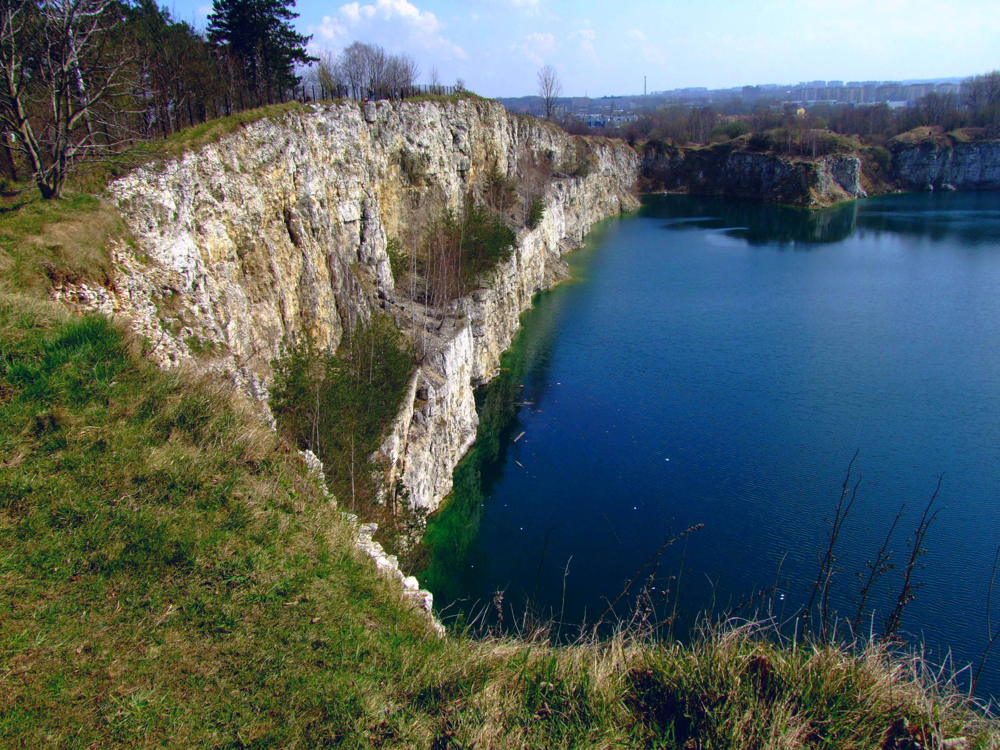
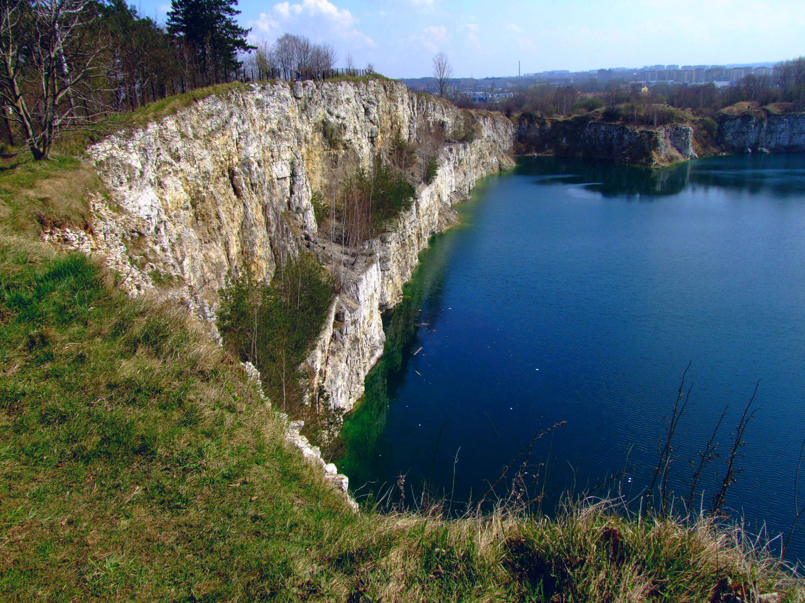

a
Kraków
Miasto uważane przez wielu za najpiękniejsze w Polsce. Kiedyś stolica Polski, drugie najbardziej znane miasto w Polsce.
Smok wawelski
– Jest symbolem tego miasta. Legendarny smok, którego kryjówką miała być jaskinia zwana Smoczą Jamą u podnóża wzgórza wawelskiego w Krakowie.
Legenda głosi, że stwór, zamieszkujący jamę pod wawelskim wzgórzem – miał terroryzować mieszkańców grodu Kraka. Musieli oni dostarczać bestii ofiary z bydła, a według niektórych podań smok pożerał tylko dziewice. Żadnemu z rycerzy nie udało się go pokonać – dokonał tego dopiero szewc Skuba. Wypchał barana siarką i postawił przed smoczą jamą. Głodny potwór pożarł baranka i w ten sposób wpadł w zastawioną przez Skubę pułapkę. Siarka sprawiła bowiem, że poczuł wielki ból i palenie w gardle. Aby ugasić pragnienie, pił wiślaną wodę – tak długo, aż pękł. W grodzie zapanowała wielka radość, a bohaterski szewc został sowicie wynagrodzony. O pokonaniu smoka przypomina rzeźba stojąca nad rzeką u podnóża Wawelu, przy wejściu do Smoczej Jamy.
Rynek Główny
Wszystkie drogi prowadzą na rynek główny. Rynek Starego Miasta w Krakowie, regularny, kwadratowy, u zbiegu 11 ulic.
Zamek Królewski
Zamek Królewski na Wawelu to jeden z najsłynniejszych zabytków europejskich i jeden z dwóch najważniejszych i największych zamków w Polsce.
Spektakularna renesansowa rezydencja pałacowa, którą podziwiamy do dziś na wawelskim wzgórzu, powstała w wyniku przebudowy gotyckiego zamku królewskiego w pierwszej połowie XVI wieku na życzenie Zygmunta I Starego. Mieszkali tu polscy królowie z najbliższą rodziną, a w reprezentacyjnych komnatach toczyło się życie dworskie i polityczne.
Autorstwa Marcin Białek - Praca własna, CC BY-SA 4.0, https://commons.wikimedia.org/w/index.php?curid=11350189
Cmentarz Rakowicki
Cmentarz Rakowicki, dawniej Cmentarz Miejski
Cmentarz komunalny w Krakowie, w Dzielnicy I Stare Miasto, założony w 1803; zajmuje powierzchnię 42 ha.
Nazwa cmentarza pochodzi od nazwy drogi (obecnie ulicy Rakowickiej) wiodącej do odległej o 2 km dawnej wsi Rakowice. Nekropolia jest miejscem pochówku krakowian, zarówno zwykłych obywateli miasta, jak i tych zasłużonych, m.in.: twórców kultury, naukowców, przedstawicieli znanych rodów, działaczy niepodległościowych, politycznych i społecznych, uczestników ruchów niepodległościowych, powstań, obu wojen światowych. Cmentarz jest zabytkiem o dużej wartości historycznej i artystycznej. Wiele nagrobków jest dziełem znanych rzeźbiarzy i architektów, m.in. Teofila Żebrawskiego, Feliksa Księżarskiego, Sławomira Odrzywolskiego, Jakuba Szczepkowskiego, a także rzeźbiarzy: Tadeusza Błotnickiego, Wacława Szymanowskiego, Karola Hukana i innych.
Skałki Twardowskiego
Park miejski w Krakowie, będący fragmentem Lasów Miejskich Krakowa na wzgórzu zrębowym Krzemionki Zakrzowskie (zwanym też Zakrzówkiem) w prawobrzeżnej części Krakowa w dzielnicy VIII Dębniki. Znajduje się w odległości około 3 km od centrum miasta, pomiędzy ulicami Tyniecka, Norymberska i Wyłom. Wchodzi w skład Bielańsko-Tynieckiego Parku Krajobrazowego. Ma powierzchnię 34 ha, jest terenem rekreacyjnym i unikalną ostoją przyrody w mieście.
Nazwa Skałek Twardowskiego pochodzi od legendy, według której Pan Twardowski w tym miejscu miał prowadzić szkołę magii i czarnoksięstwa. Pewnego dnia, jednak laboratorium wybuchło i na jego miejscu powstały skałki.
Zalew Zakrzówek
Sztuczny zbiornik wodny w Krakowie na Zakrzówku. Powstał w 1992 r. po zalaniu starego kamieniołomu wapienia. Składa się z dwóch zbiorników, połączonych przesmykiem. Brzegi zalewu stanowią jedno z ulubionych miejsc wypoczynku krakowian, jednak kąpiel w zalewie jest zabroniona z powodu ryzyka utonięć.
W czasie II wojny światowej, gdy teren był wykorzystywany jako kamieniołom, od września 1940 r. do października 1941 r. pracował w nim Karol Wojtyła.
 

Autorstwa Mach240390 - Praca własna, CC BY 4.0, https://commons.wikimedia.org/w/index.php?curid=48951249
Autorstwa Jerzy Opioła - Praca własna, CC BY-SA 4.0
Autorstwa KHRoN - Praca własna, CC BY-SA 3.0, https://commons.wikimedia.org/w/index.php?curid=16166039